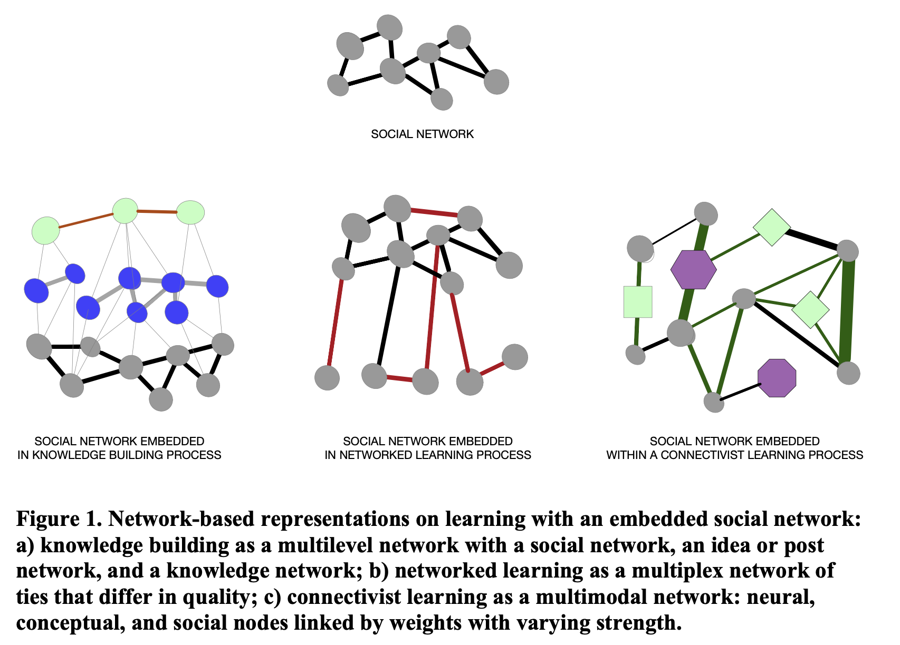

Learning in networks#
Basic ideas about networks#
Extending our discussions in the past week, I created a video to elaborate on a number of basic ideas about networks and social networks.
Learning in networks#
This week, we are focused on thinking about learning in or through networks.
The use of network analysis to examine learning needs to be informed by theories of learning and contexts in which learning happens.
During this week, you are engaged to explore several different theories that emphasize a “network worldview” and are widely applied to guide network analysis.
Required readings:
Haythornthwaite, C. (2015). Rethinking learning spaces: Networks, structures, and possibilities for learning in the twenty-first century. Communication Research and Practice, 1(4), 292–306. https://doi.org/10.1080/22041451.2015.1105773
Jones, C. (2015). Networked learning: An educational paradigm for the age of digital networks (Ch. 3). Springer International Publishing. https://doi.org/10.1007/978-3-319-01934-5
Poquet, O., & Chen, B. (2023). Integrating Theories of Learning and Social Networks in Learning Analytics. In K. Bartimote, S. Howard, & D. Gašević (Eds.), Theory Informing and Arising from Learning Analytics. Springer Nature.
Theories of learning in networks#
Network analysis of learning does not necessitate network-based theories of learning. For example, researchers can assess a learner’s knowledge by analyzing concept maps generated by students [Siew, 2019]. This use of network analysis does not involve consideration of learning in or through networks.
However, there are learning theories that conceptualize learning from a network perspective. In other words, they have distint opinions about how learning is fundamentally a network process, how networks support learning, and/or how learning shapes networks. Exploring these theoretical ideas would help in two ways:
Theories of learning would help unleash the full potential of network analysis. While network analysis techniques are helpful, theories of learning that bring a network perspective provide additional tools for network analysts to grapple with the learning phenonemon.
Theories of learning would provide grounding for network construction. As explained in Haythornthwaite (2015) and Poquet & Chen (in press), constructing networks from learning data is not always straightforward. Theories of learning offer guidance and justification for the construciton of network models to represent learning.
As illustrated by this figure from Poquet & Chen (in press), a social network of learners can be constructed in different ways based on distinctive views of learning including knowledge building, networked learning, and connectivism.
At the core of each network model, we ask: What is about the generative processes of learning according to the network-based view of learning? The answer to this question differs across these three theories.
Knowledge building emphasizes the interaction between ideas and people
Networked learning cares about content relationships and and situations where they form
Connectivism considers learning as connecting, and cares the “pipe” more than “content in the pipe”

Three levels of consideration when applying network analysis to learning#
P: philosophy, worldviews, paradigms. This level is about how we think about “what is real” and “how people examine reality”. These questions apply to analysis of learning.
M (big M): methodology. This level deals with a systematic body of knowledge that provide general research strategies to guide a research project. A methodology intends to coordinate every step of the process, e.g., sampling, data collection, analysis, reporting.
m (small m): methods/techniques. A method is a way of reaching some predefined goal. One example of using network analysis as a method is to simply use a centrality measure to depict students in a social network.
Also, SNA (or network analysis in general) does not need to be quantitative. As a matter of fact, SNA grew, in large part, out of the efforts of ethnographers to make sense of complex relational data. While modern SNA provides strong support for quantitative inquiry, SNA can be combined with qualitative methods in various ways.